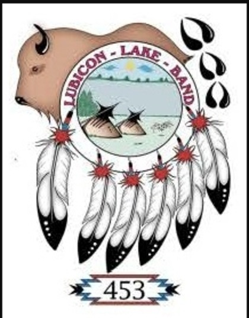

Role: Videography, Editing, Storytelling Year: 2017 Focus: Cultural preservation, visual storytelling, community documentation
Overview In 2017, I created a short video capturing the Lubicon Lake Cultural Camp experience. The project focused on documenting cultural teachings, community engagement, and the importance of intergenerational knowledge sharing. The intention was to preserve moments while honoring the spirit and authenticity of the gathering. My Role Filmed live cultural activities and community interactions Edited and structured the narrative Balanced pacing, tone, and visual storytelling Ensured respectful representation of the event Approach Observational filming style Minimal interference with natural moments Focus on authenticity over production polish Story-driven editing Impact Preserved cultural moments through digital storytelling Strengthened my understanding of ethical documentation Reinforced the importance of visual narrative in community spaces Reflection This project shaped my understanding of storytelling as a responsibility. It taught me that capturing community spaces requires sensitivity, patience, and respect. Short Card Version Lubicon Lake Cultural Camp (2017) Short documentary capturing cultural teachings and community storytelling.